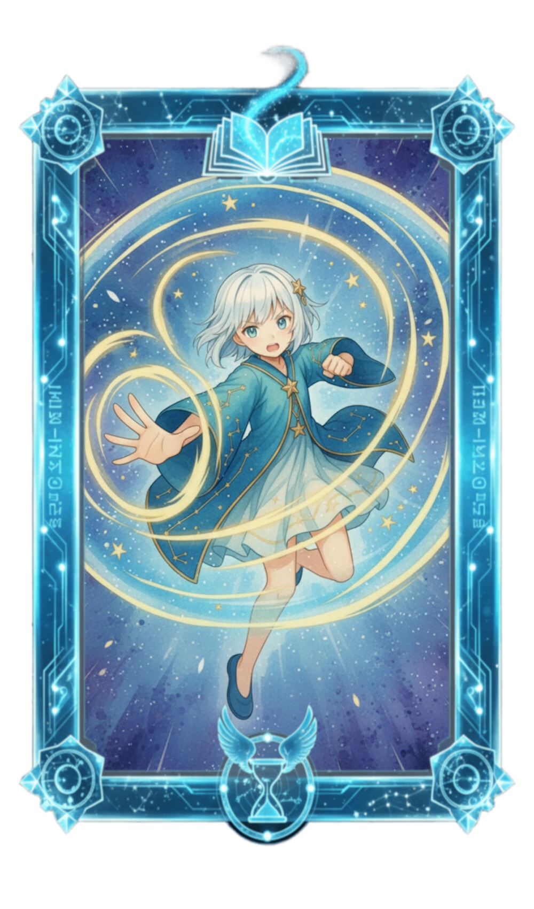

ルール (RULE)
HorizonNotesの遊び方を紹介します。
3. カードとアルカステラの基本
HorizonNotesを構成する「アルカステラ（ユニット）」と「スペルカード」の基礎能力と、ゲーム内での役割を解説します。
共通ルール（コストと発動タイミング）
共通ルール：コストと発動タイミング
全てのスキルとスペルカードに共通する、発動のための前提条件です。
共通ルール：コストと発動タイミング
全てのスキルとスペルカードに共通する、発動のための前提条件です。
全てのスキルとスペルカードには、アクションを起こすために必要なコスト（消費エーテル数）と、発動できるタイミングが記載されています。
発動タイミングの種類
記載された条件に合致している時のみ、そのカードを行使できます。
- 好きなタイミング: 自分のターン、相手のターンを問わず、いつでも発動可能。
- 自分のターン: 自分のターンの特定のフェイズ、または自分のアクション中に発動可能。
- 相手のターン: 相手のターンの特定のフェイズ、または相手のアクション中に発動可能。
-
カウンター: [アクション名]:
記載された「[アクション名]」が直前に行われた時、その効果が解決される前に割り込んで発動します。
（例: ≪カウンター: スペルカード≫の場合、相手のスペル発動に反応して割り込みます）
アルカステラについて

レベル (Lv) と能力値
-
Lv (レベル): 戦闘開始時はLv1で始まり、戦闘中のレベルアップ条件を満たすことで
最大Lv3まで上昇します。
Lvアップでスキルの開放や能力値が上昇します。 - HP (体力): 0になるとそのアルカステラは戦闘脱落状態戦闘脱落状態：HP0で移行。盤面に残り行動不能。となります。
- ATK (基礎攻撃力): 攻撃スキルのダメージに加算されます。
- DEF (基礎防御力): ダメージ軽減値。アンタップ状態アンタップ状態：待機中を示す状態。スキル使用やブロックが可能。でそのまま、タップ状態タップ状態：行動済みを示す状態。DEFが半減する。なら値の半分が適用されます。
アルカステラのスキルと役割（攻撃、支援、必殺技）
アルカステラは、Lvに応じて以下の3種類のスキルと、特別なリーダースキルを持ちます。
1. 攻撃スキル
メインの攻撃手段。エーテルを消費し、発動後はタップ状態になります。
- 使用回数: アンタップ状態であれば、1ターンに何度でも連打可能。
- 制約: タップ状態では使用不可。
2. 支援スキル
サポートスキル。エーテルを消費しますが、使用してもタップ状態にはなりません。
- 使用回数: 1ターンに一度、各アルカステラごとに発動可能。
3. アストラルコード (必殺技)
デッキの再構築時に使用権を獲得する強力な必殺技。
- コスト: 使用権を消費します。
- 制約: 攻撃スキルと同様、タップ状態では使用できません。発動後はタップ状態になります。
4. リーダースキル (パッシブ)
リーダーに指定されたアルカステラのみが持つ、コスト不要のパッシブ効果です。
- 効果: 発動条件を満たせば毎ターン効果を発揮します。（ATK永続上昇やドロー枚数増加など）
スペルカードについて
スペルカードの基本
スペルカードの基本
スペルカードスペルカード：デッキの主要な構成要素（30枚）となるカード。は、デッキの主要な構成要素（30枚）となるカードです。 カードにはクラスが割り当てられており、「クラス一致の原則」に従って使用します。
- クラス: 7つのクラスのいずれかに属します。（ニュートラルも含む）
- コストとタイミング: 前述のルールに従います。
- 効果: 発動に成功すると、カードに記載された効果が発揮されます。